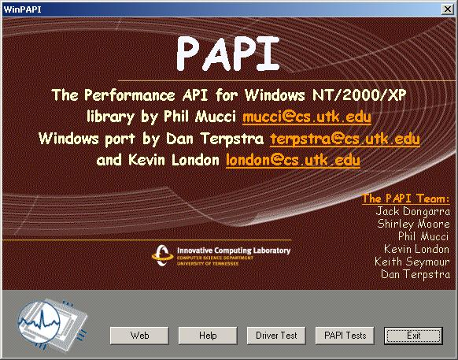
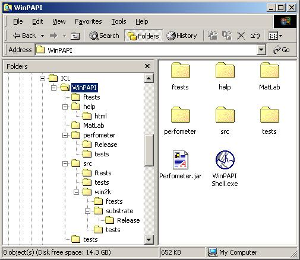

|
|
PAPI For Windows
|
|

|
Welcome to PAPI for Windows
PAPI, or the Performance Application Programming
Interface
is a machine independent set of callable routines that provide access to
the performance counters on most modern processors. This version of PAPI
implements the interface for Windows NT, 2000 or XP running on Intel
IA32 archtectures.
If you are reading this, you have successfully installed PAPI on your
machine.
Below are some topics you may wish to learn more about:
About this Installation
Three installation options were presented to you when you installed WinPAPI:
Typical
The typical installation contains the following components:
-
The WinPAPI DLL to which you can link your instrumented
programs.
-
The WinPMC kernel driver which supports the WinPAPI
DLL and provides access to the low level performance counter hardware.
-
A collection of tests that exercise the WinPAPI DLL
Library and provide a variety of metrics on your machine. These tests are
provided both as precompiled console executables, and as source projects
that can be modified and rebuilt using Microsoft Visual C++ 6.0 or higher.
-
A WinPAPI Shell Application that provides simple button
access to a variety of functions.
-
A MatLab support folder that contains
tools to call PAPI functions from MatLab, and example programs to show
you how.
Compact
The compact installation includes only the linkable WinPAPI
DLL and WinPMC kernel driver. It assumes that
you have access to the support and reference materials from another source,
such as the PAPI CVS repository.
Custom
The custom installation allows you to select only those components (such
as just the help files) that you wish to install or reinstall on your system.
Note that for access to the full sources of the driver, dll, and shell
application, you must use the PAPI CVS repository.
The WinPAPI Shell Application
The Shell provides a simple interface to the basic functions of PAPI on
Windows. You can run the shell from the shortcut in the Start->Programs->WinPAPI
path, or by double-clicking the icon in the directory where WinPAPI was
installed. The Shell consists of a splash screen with five buttons, as
described below:

Exit
Exits the Shell application.
PAPI Tests
Presents an Open File dialog that allows you to select a precompiled test
to exercise PAPI functionality. For more information on modifying existing
tests or creating your own tests, see the Test Suite.
Driver Test
If enabled, the kernel driver appears to be properly installed. The driver
test will call the driver and return a welcome string. The test will then
issue a RDPMC instruction, which will fail if the driver is not properly
installed and running. Finally, the test will examine the machine to determine
if the Uniprocessor Free Build or the MultiProcessor or Checked Build is
running. This has implication for future thread-level support of PAPI.
Help
If enabled, opens this page in your default browser.
NOTES:
-
If the help files are not found where expected, this button will be dimmed.
-
If your browser is already open, the proper page may not be displayed.
Web
Links to the PAPI home page on the World Wide Web.
MatLab Support
Two external PAPI function calls are provided for users of MatLab.With
these calls you can monitor the number of floating point instructions
executed and the instantaneous MegaFLOPS rate between any two points in
your MatLab code. Three m-files are also included to provide examples of
using the function calls. These examples can also help you calibrate the
performance of your system.
To use these resources, open MatLab, change directory to %root%\MatLab
(where %root% is typically 'C:\Program Files\ICL\WinPAPI\'), and type the
name of an m-file. You can also copy the Mex files to a directory on the
MatLab search path so they will be found automatically.
The files provided include:
Mex External Functions
Example M-Files
The PAPI Programmer's Reference
The PAPI programming interface consists of a collection of 6 high-level
calls, and around 40 low-level calls. Unix style man pages for each of
these calls are available in html format here.
The Test Suite and programming your own tests
A collection of precompiled tests is included in the /tests folder found
at the same level as the WinPAPI Shell Application. These tests execute
as Windows console applications.They provide a variety of measurements
of operations on your system and print their results to the console window.
If you run them from the Shell Application, they will dynamically open
in a console window that is dismissed with a keystroke after the test completes.
You can also run the tests directly by opening a console window and typing
the name of the test as shown below:
-
Start->Run...
-
Open: cmd OK
-
>cd %root%\tests (where %root% is the root directory where WinPAPI
was installed)
-
>zero (or any other test.exe file)
If you want to modify any of the existing tests, or use them as templates
to create your own tests, you must have a copy of Microsoft Visual C++
Version 6.0 or higher installed on your computer. If you do, you can run
the shortcut to PAPI_tests.dsw found in the Start->Programs->WinPAPI path.
This shortcut will open a workspace in Visual C++ that contains projects
for all the tests included with this installation. You can then open the
source for any test to examine how things are done, or use any of the projects
to pattern the development of a test of your own. Note that the files in
all the projects are referenced by paths relative to the existing project.
If you move anything, the builds are likely to break.
Typical Results for the
Test Suite
The tests included with the Test Suite are intended to be examples of a
variety of features of PAPI, or solutions to specific user problems. They
also serve as examples of programming with PAPI. The best way to understand
what the tests are doing is to browse the source code included in the "Typical"
installation. If you do not have Microsoft Visual C++ installed, any other
text editor will work. These source files can be found in:
%root%\src\tests (where %root% is the root directory where WinPAPI
was installed).
The output obtained on an 850 MHz Pentium III for these tests can be
viewed here.
The WinPAPI Dynamic Link Library
The WinPAPI DLL consists of two pieces:
-
WinPAPI.DLL, installed (typically) in C:\WINNT\system32\, and
-
WinPAPI.lib, the linkable library, found in %root%\src\win2k\substrate\Release.
The library is placed in this arcane location to make sure that the test
projects can find it where they expect it to be in the development environment.
You can copy it to your own projects as desired.
To incorporate PAPI calls into your codes, you must include WinPAPI.lib
and papi.h or papi_test.h in your project. You can do this either by referencing
the files in this directory tree, or by copying the files to your local
project.
The source code for the PAPI library is not distributed with this installation.
If you would like access to the source code and project to rebuild the
library, you must use the PAPI CVS repository.
The WinPMC Kernel Driver
The WinPMC Kernel Driver is a small (~3K) code that provides access to
the normally restricted assembly instructions that allow programming of
the hardware performance monitoring counters found on all Pentium class
x86 cpus. If the driver has been installed successfully, the Driver Test
button in the WinPAPI Shell will be enabled and the tests it performs will
be successful.
The driver file, WinPMC.sys, requires administrator privileges to be
installed in C:\WINNT\system32\drivers. Also, the registry must be modified
for this service to be recognized by calling programs. DO NOT attempt to
install this driver on a new machine by simply copying the file!
As with the PAPI library, The source code for the Kernel Driver
is not distributed with this installation. If you would like access to
the source code for the library, you must use the PAPI CVS
repository. In addition to Microsoft Visual C++, you must also have
a current version of the Microsoft
NTDDK installed on your computer to rebuild the driver.
The structure of PAPI files and folders on your disk
The folder structure created on your disk to hold the PAPI installation
may appear rather arcane and complex. This is because it must reproduce
the folder structure of the development environment in order for the test
applications to build successfully. The structure of the default install
is shown graphically below:

CVS access to the complete sources for PAPI
Access to all of the PAPI sources for Windows and all other supported platforms
is available through the PAPI
CVS Repository. CVS
is a sophisticated version control system used primarily in the Unix world
to allow multiple developers to work on a project simultaneously. You can
interactively browse the PAPI CVS Repository through the WWW by visiting
the PAPI CVS
Web, or you can download a branch of the PAPI CVS tree using a program
for Windows such as WinCVS . Contact
the PAPI development team if you would
like to participate in PAPI development.